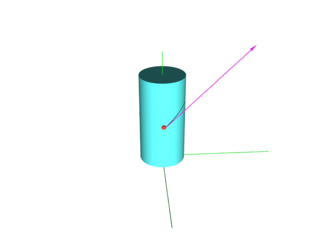

EXAMPLE: আমাদের surface-এর ফর্মুলা হল $(\cos u,\sin u, v)$ যেখানে $(u,v)\in[0,2\pi)\times[0,5].$ এর উপর $(u,v)=(0,2)$-র জন্য যে বিন্দুটা হয় সেটা নিলাম, মানে $(1,0,2).$ এখানে একটা tangent vector দিচ্ছি $((1,0,2), (0,4,3)).$ এখানে $(1,0,2)$ হল গোড়াটা, আর $(0,4,3)$ হল তীরচিহ্ন-টা৷ মানে ডগাটা থাকবে $(1,0,2)+(0,4,3) = (1,4,5)$-এ৷ তাহলে এর জন্য $(a,b)$ কী হবে? অবস্থাটা নীচের ছবিটার মত৷
|  |
|---|
 আমরা এখানে যা করলাম সেটা surface-টার যেকোনো tangent vector দেওয়া থাকলেই
করা যেত৷ মানে যেকোনো tangent vector দেওয়া থাকলেই আমরা $a$ আর $b$ দুটো real number বার করতে পারি৷
অতএব আমরা লিখতে পারি $a = \phi(t),$ এবং $b = \xi(t),$ যেখানে $t$ হল surface-টার কোনো tangent vector.
এই $\phi(\cdot)$ আর $\xi(\cdot)$-এর একটা বৈশিষ্ট্য হল এই যে, surface-টার উপর যেকোনো বিন্দুতেই
এরা হল সেখানকার tangent plane-টা থেকে ${\mathbb R}$-এ একটা linear transform.
এরকম function-দের বলে এই
surface-টার জন্য একটা 1-form.
এই ধারণাটা বার বারই কাজে লাগবে৷ তাই গুছিয়ে সংজ্ঞাটা লিখে রাখি৷
ধরা যাক কোনো একটা surface আছে৷ তার যাবতীয় $p$ বিন্দুতে tangent
plane-টার নাম দিলাম $T_p,$ (মানে সেই বিন্দুতে যাবতীয় tangent vector-এর set
এটা)৷ তাহলে একটা 1-form মানে হল একটা function $\phi:\cup_pT_p\rightarrow{\mathbb R},$
যেটা প্রতিটা $T_p$-র উপরে একটা linear transform হয়৷
আমরা এখানে যা করলাম সেটা surface-টার যেকোনো tangent vector দেওয়া থাকলেই
করা যেত৷ মানে যেকোনো tangent vector দেওয়া থাকলেই আমরা $a$ আর $b$ দুটো real number বার করতে পারি৷
অতএব আমরা লিখতে পারি $a = \phi(t),$ এবং $b = \xi(t),$ যেখানে $t$ হল surface-টার কোনো tangent vector.
এই $\phi(\cdot)$ আর $\xi(\cdot)$-এর একটা বৈশিষ্ট্য হল এই যে, surface-টার উপর যেকোনো বিন্দুতেই
এরা হল সেখানকার tangent plane-টা থেকে ${\mathbb R}$-এ একটা linear transform.
এরকম function-দের বলে এই
surface-টার জন্য একটা 1-form.
এই ধারণাটা বার বারই কাজে লাগবে৷ তাই গুছিয়ে সংজ্ঞাটা লিখে রাখি৷
ধরা যাক কোনো একটা surface আছে৷ তার যাবতীয় $p$ বিন্দুতে tangent
plane-টার নাম দিলাম $T_p,$ (মানে সেই বিন্দুতে যাবতীয় tangent vector-এর set
এটা)৷ তাহলে একটা 1-form মানে হল একটা function $\phi:\cup_pT_p\rightarrow{\mathbb R},$
যেটা প্রতিটা $T_p$-র উপরে একটা linear transform হয়৷